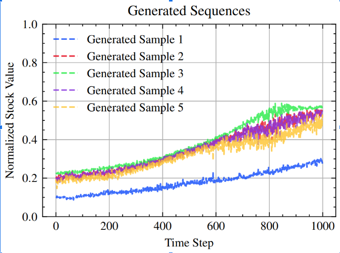

Work Experience
- Architected a resilient autonomy stack for NASA-aligned wildfire-suppression UAVs on VOXL 2, targeting BVLOS operation in GPS-denied, high-interference environments.
- Fused Basalt VIO with GPS for robust state estimation; designed seamless sensor failover for stable flight under degraded conditions.
- Deployed real-time 3D Gaussian Splatting (3DGS) for aerial environment reconstruction and surveillance, delivering high-fidelity situational awareness to emergency responders.
- Prototyped self-organizing multi-drone sensing architectures to maintain mission continuity during comms/GPS outages.
- Trained a DreamerV3 World Model on Crazyflie FPV data for imagination-based policy training without direct environment interaction.
- Built a 6-DoF pose estimation pipeline using 3DGS-generated synthetic FPV datasets (10k frames) + fine-tuned U-Net; achieved sub-centimeter positional accuracy in sim-to-real transfer.
- Developed an actor-critic (PPO) policy within the latent world model; increased waypoint completion from 70% → 95% in simulation trials.
- Designed min-snap trajectory planners with differential flatness, reducing planning time by 30% and enabling agile quadrotor maneuvers in cluttered environments.
- Engineered a structured-light point cloud sensor achieving 0.99 IoU on 1 cm² items at 0.05 m under <10 Lux, enabling bin-picking of highly reflective industrial components.
- Built an auto-annotation pipeline (SAM, Detectron2, YOLOv7) that reduced manual labeling time by >80%, accelerating training cycles across multiple product lines.
- Developed a language-conditioned multi-task RL framework (SAC + DAgger) with Georgia Tech; improved zero-shot task success by 200% via natural language goal specification.
- Collaborated with JAXA to design a vision-based 6-DoF grasping system for multi-limbed robots aboard the International Space Station, optimized for microgravity manipulation.
- Filed 2 patents in computer vision and robotic grasping (USPTO & JPO).
- Developed a 3D residual U-Net region-proposal network for pulmonary nodule detection on 888 CT scans (LUNA16); achieved a FROC score of 0.914, surpassing the baseline by 8%.
Education
Projects

MPC & PID spline tracker for autonomous gate navigation. NanoSAM keypoint detector for misaligned gate correction.

SAM2 + optical flow + VLMs for real-time object tracking and ego-vehicle motion estimation. YOLOv8 & SfM for spatial grounding.
Code
Transformer-VAE with RealNVP normalizing flows conditioned on VIX. Outperforms TimeGrad & GARCH in distributional similarity.
Patents & Publications
Unified 3DGS-based simulator that automates 6-DoF pose and mask labeling (10k images in <20 min), enabling zero-shot sim-to-real aerial tracking with 100% success on high-speed trajectories.
Automated data generation framework to eliminate manual labeling bottlenecks for complex 3D pick-and-place robotics in bulk manufacturing.
Vision-based sensing system using ROI determination and feature extraction for accurate component posture estimation during robotic pick-and-place.